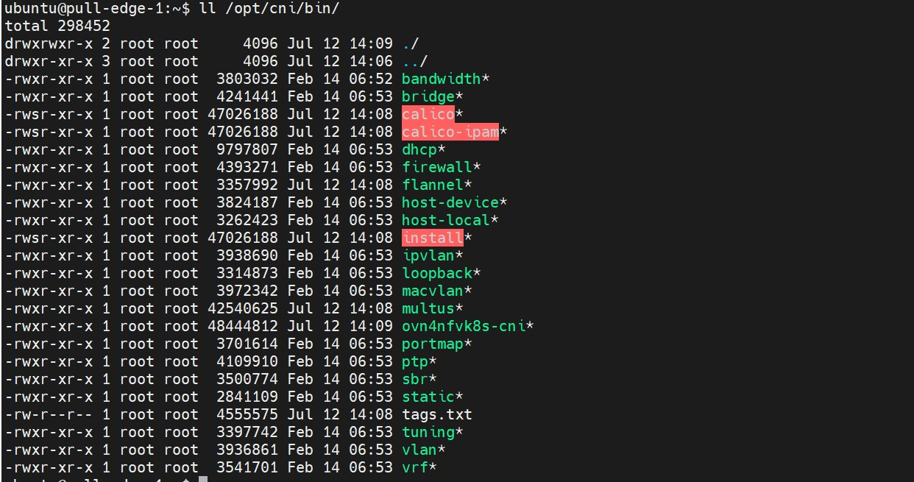

Airren Ren
Monday, January 1, 1
CNI Container Networking Interface
Docker CNM
What is CNI?
How CNI plugin works?
What a CNI plugin is made of?
How a CNI plugin is being used in K8s?
How a CNI plugin is executed?
Anatomy of Pod networking
What is CNI
CNI stands for Container Networking Interface
An interface between container runtime and the network implementation
Configure the network interfaces and routes
Concern itself only with the netwrok connectivity.
How CNI plugin works?
- A CNI binary
- Handle connectivity - configures the network interface of the Pod
/opt/cni/bin
- A daemon
- Handle reachability - manager routings across the cluster
What a CNI plugin is made of ?
Part 1
/etc/cni/net.d contains the CNI configuration. The name decide the order.

Part2

1# cat /opt/cni/bin/my-cni.demo
2case $CNI_COMMAND in
3ADD)
4 # configure networking for a new container
5;;
6DEL)
7 # cleanup when container is stopped
8;;
9GET)
10;;
11VERSION)
12 # get the version of CNI
13;;
14esac
How CNI plugin is executed?
1CNI_COMMAND=ADD
2CNI_CONTAINERID=123456780
3CIN_NETNS=/proc/123456/netns
4CNI_IFNAME=eth0
1Container Info ---- env vars ---
2
3 ---> CNI
4CNI config ------ stdin --------
Anatomy of Pod Netwroking
veth pair
1case $CNI_COMMAND in
2ADD)
3 podcidr=$(cat /dev/stdin | jq -r ".podcidr") # 10.240.0.0/24
4 podcidr_gw=$(echo $podcidr| sed "s:0/24:1/g") # 10.240.0.1
5 btctl addbr cni0 # create a new bridge(if doesnt exist),cni0
6 ip link set cni0 up
7 ip addr add "$(podcidr_gw)/24" dev cni0 # assign 10.230.0.1/24 to cni0
8
9
10 host_ifname="veth$n" # n = 1,2,3..
11 ip link add $CNI_IFNAMW type veth peer name $host_ifname
12 ip link set $host_ifname up
13
14 ip link set $host_ifname master cni0 # connect veth1 to bridge
15 ln -sfT $CNI_NETNS /var/run/netns/$CNI_CONTAINERID
16 ip link set $CNI_IFNAME netns $CNI_CONTAINERID # move eth0 to Pod ns
17
18 # calculate $ip
19 ip netns exec $CNI_CONTAINERID ip link set $CNI_IFNAME up
20 ip netns exec $CNI_CONTAINERID ip link addr add $ip/24 dev $CNI_IFNAME
21 ip netns exec $CNI_CONTAINERID ip route add default via $podcidr_gw dev $CNI_IFNAME
22
23;;
1if [ -f /tmp/last_allocated_ip ]; then
2 n=`cat /tmp/last_allocated_ip`
3else
4 n =1
5fi
6ip=$(echo $podcidr| sed "s:0/24:$(($n+1)):g")
7echo $(($n+1)) > /tmp/last_allocated_ip
If the pod-to-pod communactaion is doesn’t work
1iptables -A FORWARD -s 10.240.0.0/16 -j ACCEPT
2iptables -A FORWARD -d 10.240.0.0/16 -j ACCEPT
connect to another node
1# node-1
2ip route add 10.240.1.0/24 via 10.10.10.11 dev enp0s9
3# node-2
4ip route add 10.240.0.0/24 via 10.10.10.11 dev enp0s9
5# and enable ipv4-forward
Pod to publice network need a SNAT
1iptables -t nat -A POSTROUTING -s 10.240.0.0/24 -o cni0 -j MASQUERADE
expose pod
1kubectl expose pod nginx2 --port=8080 --target-port=80
2# this will create service with cluster IP
CNI
Kubernetes Networking Requirements
-
Each Pod get their own IP addresss
- Containers within a Pod share network namespace
-
All pod can communicate with all other pods without NAT(Network Address Translation)
-
All nodes can communicate with all pods without NAT
-
The IP of the Pod is same throughout the cluster
-
runtimeis the program responwsible for executing CNI plugins. -
pluginis a program that applies a specified network configuration.
CNI generic parameters
1{
2 "cniVersion": "0.2.0",
3 "name": "mybridge",
4 "type": "bridge",
5 "bridge": "cni_bridge0",
6 "isGateway": true,
7 "ipMasq": true,
8 "ipam": {
9 "type": "host-local",
10 "subnet": "10.15.20.0/24",
11 "routes": [
12 {
13 "dst": "0.0.0.0/0"
14 },
15 {
16 "dst": "1.1.1.1/32",
17 "gw": "10.15.20.1"
18 }
19 ]
20 }
21}
- cniVersion: The version of the CNI spec in thich the definition works with
- name: The network name
- type: The name of the plugin you wish to use. In this case, the actual name of the plugin executable
- args: Optinal additional parameters
- ipMasq: Configure outbound masquerade (source NAT) for this network
- ipam
- type: The name of the IPAM plugin executable
- subnet: The subnet to allocate out of (this is actually part of the IPAM plugin)
- routes:
- dst: The subnet you wish to reach
- gw: The IP address of the next hop to reach the dst. If not specified the default fateway for the subnet is assumed
- dns:
- nameservers: A list of nameservers you wish to use with this network
- domain: The search domain to use for DNS requests
- search: A list of search domains
- options: A list of options to be passed to the receiver
Plugin (bridge) specific paramters
- isgateway: If true, assigns an IP address to the bridge so containers connected to it may use is as a gateway.
- isdefaultgateway: If true, sets the assigned IP address as the default route.
- forceAddress: Tell the plugin to allocate a new IP address if the previous value has changed.
- mtu: define the MTU of the bridge
- hairpinMode: Set hairpin mode for the interfaces on the bridge.
These variables are passed to the plugin via environmental variables.
1sudo CNI_COMMAND=ADD CNI_CONTAINERID=1234567890 CNI_NETNS=/var/run/netns/1234567890 CNI_IFNAME=eth12 CNI_PATH=`pwd` ./bridge < mybridge.conf
- CNI_COMMAND=ADD we are telling CNI that we want to add a connection
- CNI_CONTAINERID=1234567890 We’re telling CNI that the network namespace we want to work
- CNI_NETNS=/var/run/netns/1234567890 The path to the namspace
- CNI_IFNAME=eth12 The name of the interface we wish to use on the container side of the connection
- CNI_PATH=
pwdWe always need to tell CNI where the plugin executables live. In this
[7/15/2022 10:33 AM] Ramakrishnan, Kuralamudhan https://www.dasblinkenlichten.com/understanding-cni-container-networking-interface/ [7/15/2022 10:36 AM] Ramakrishnan, Kuralamudhan https://github.com/containernetworking/cni/blob/main/SPEC.md [7/15/2022 10:36 AM] Ramakrishnan, Kuralamudhan https://github.com/containernetworking/plugins/tree/main/plugins/main/bridge [7/15/2022 10:37 AM] Ramakrishnan, Kuralamudhan https://github.com/containernetworking/plugins/blob/main/plugins/main/bridge/bridge.go
https://www.youtube.com/watch?v=zmYxdtFzK6s&ab_channel=CNCF%5BCloudNativeComputingFoundation%5D
https://github.com/eranyanay/cni-from-scratch
Question:
-
the CNI configuration default path is
/etc/cni/net.d/. If there are multiple configuration file in this path, for example, In SDEWAN project, there are as following:1root@pull-edge-1:/etc/cni/net.d# ll 2total 32 3drwxr-xr-x 4 root root 4096 Jul 12 14:09 ./ 4drwxr-xr-x 3 root root 4096 Jul 12 14:08 ../ 5-rw------- 1 root root 857 Jul 12 14:08 00-multus.conf 6-rw-r--r-- 1 root root 804 Jul 12 14:08 10-calico.conflist 7-rw-r--r-- 1 root root 88 Jul 12 14:09 20-network.conf 8-rw------- 1 root root 2854 Jul 19 09:11 calico-kubeconfig 9drwxr-xr-x 2 root root 4096 Jul 12 14:08 multus.d/ 10drwxr-xr-x 2 root root 4096 Jul 12 14:09 ovn4nfv-k8s.d/
How kublet know which one is the default CNI? Does it depend on the file name numberic perfix ?
- I found all the CNI binary in this Path
/opt/cni/bin. Is this a default PATH for CNI spec ? If any CNI will put the binary in this path. - In the Service Function Chain Demo Archtecture. Is the brown box represent a virtual switch? And except the brown box, does it still need another CNI interface as the default CNI interface for kubelet to manager the pod.
- Does kubernetes support any versoin of CNI SPEC.For example, does kubernetest support all of the CNI SPEC version.
Reference
https://wiki.ith.intel.com/display/containers/Nodus
How kubelet find which one is the primariy CNI.